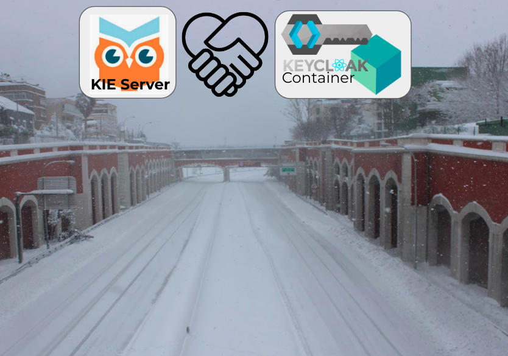
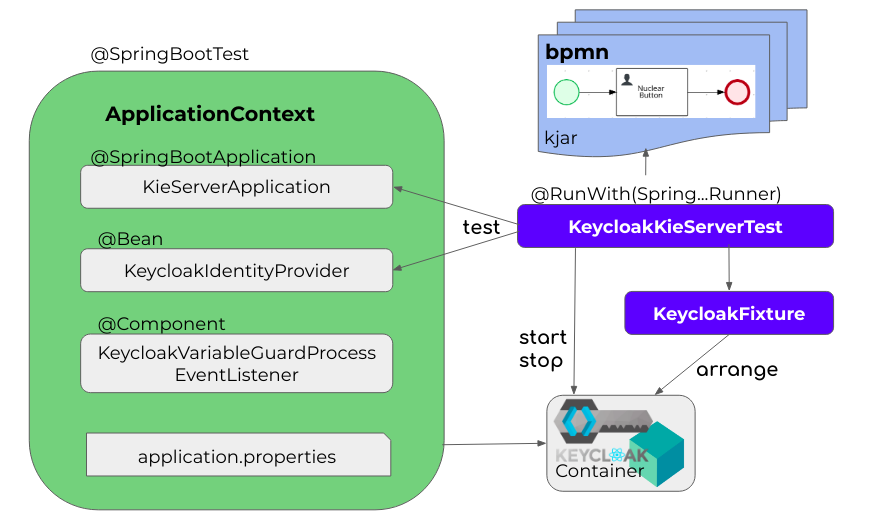
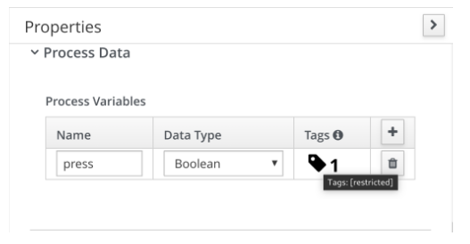

Easing the Keycloak integration tests in Kie Server (with Testcontainers)

Testcontainers is a Java library which allows you to interact seamlessly with any application that can be dockerized, making your integration testing much easier (and fun).
Let’s see a practical integration sample with Kie Server, the lightweight process and decision engine used within projects like jBPM and Drools.
In this article, we are going to demonstrate how Kie Server tests can take advantage of Testcontainers, when these tests involve other applications, like Keycloak (an open-source Identity Provider which secures resources with minimum fuss). As a result of this, arrange phase of the tests will be part of our fixture classes (as we can manage entire container lifecycle on demand, from test code) and, therefore, easily automated in a CI/CD pipeline.
The code sample used during this post can be found here.
Test elements

Our sample test comprises these elements:
- KeycloakContainer class as customization of a GenericContainer for the Keycloak image, allowing start, stop and interact with Keycloak from the test environment.
- KeycloakFixture class, where needed resources for tests (application client, users and their roles) are created in the Keycloak container.
- Process Definition, based on BPMN, with a process variable that is tagged as restricted, i.e., it can only be updated by authorized users.
- KeycloakKieServerTest class, which starts a Spring application context and contains all the tests to verify the target feature (in this case, tagged process variables with authorization).
- KieServerAppplication class, a SpringBoot application that uses Keycloak and Spring Security for securing access to Kie Server resources.
- KeycloakVariableGuardProcessEventListener class, which extends the VariableGuardProcessEventListener fetching the configuration role from the application.properties
- KeycloakIdentityProvider class, adapter that implements IdentityProvider interface providing authorization methods (getRoles, hasRole and getName) from the SecurityContext.
KeycloakContainer, bringing the Keycloak image to Java
For using Testcontainers, first we need to add its dependency:
<dependency>
<groupId>org.testcontainers</groupId>
<artifactId>testcontainers</artifactId>
<scope>test</scope>
</dependency>KeycloakContainer is the customized container class created by extending Testcontainers’ GenericContainer base class and passing a String to the parent constructor with the configurable Docker image we want to use (e.g., “quay.io/keycloak/keycloak:12.0.1”).
INFO: During startup, if the required image is not available at Docker local images cache, Testcontainers will download it and store it there for quicker executions the next time.
The constructor also defines the exposed port number/s inside of the container. From the test point of view (outside of the container), Keycloak will listen on a random free port, making it perfect for the execution of parallel tests and avoiding port clashes.
With this, it is necessary to expose the Keycloak dynamic URL somehow. Take a look at the following method:
public String getAuthServerUrl() {
return String.format("http://%s:%s%s",
getContainerIpAddress(),
getMappedPort(KEYCLOAK_PORT_HTTP),
KEYCLOAK_AUTH_PATH);
}As the tests need to ask Testcontainers for this random port, getMappedPort method is used to return it at runtime, taking in the container port as an argument to resolve it. This Keycloak dynamic URL is exposed through the getAuthServerUrl method above.
Finally, the configure method can be overridden to set up specific commands, as well as the ENVIRONMENT_VARIABLES used during the container start up. For example, the user/password for the Keycloak admin account that can be provided as environment variables or by means of a file.
@Override
protected void configure() {
withEnv("KEYCLOAK_USER", KEYCLOAK_ADMIN_USER);
withEnv("KEYCLOAK_PASSWORD", KEYCLOAK_ADMIN_PASSWORD);
}INFO: After running all our tests -or in the rainy scenario, when the JVM crashes due to an unexpected error- a sidecar container Ryuk (started with Testcontainers) will take care of terminating all involved containers. By the way, Ryuk was named after the anime/manga daemon from Death Note, that kills everybody whose name is written down in the notebook.
Ryuk started - will monitor and terminate Testcontainers containers on JVM exitTIP: In some environments (like Fedora 33), Ryuk must be started in privileged mode to work properly (if not, "permission denied" will be shown). If that is your case, add the following line to the .testcontainers.properties:
ryuk.container.privileged = trueKeycloakFixture, getting everything ready before testing
To test this authorization feature, users and roles must have been defined in advance in Keycloak. This is the goal of this class, which allows us to create all these elements in an automated way.
Basically, we may use the KeycloakBuilder client to access Keycloak with the admin user:
KeycloakBuilder.builder()
.serverUrl(serverUrl)
.realm(MASTER_REALM)
.clientId(ADMIN_CLI_CLIENT_ID)
.username(KEYCLOAK_ADMIN_USER)
.password(KEYCLOAK_ADMIN_PASSWORD)
.build(); With the default master realm (or any other realm), a client named “springboot-app” will be created with AccessType set to “public” and “Direct Access Grants” enabled.
In this realm, two users will be defined:
- user named john and password john1 with PM role
- user named Bartlet and password 123456 with President role
The former user won’t have access to the process variable tagged as restricted, while the latter one (with President role) will, as it’ll be explained in the next section.
Tagged variables in BPMN, defining the business logic
At this point, let’s dive in the actual behavior we want to test.
Suppose we have a critical process like this:

This process contains a boolean variable named “press” that it is tagged as “restricted”. It can only be updated by a user with a privileged role.

In our example, only users with the President role might change this “press” variable value.
INFO: The configuration of the roles used in this tagged variable is defined in the application.properties with:
kie.restricted-role = PresidentIf an unprivileged user tries to change the “press” value, a VariableViolationException will be thrown during runtime by the process. This access guard only affects variables, so the process itself might have other relaxed restrictions.
These are the three tests, belonging to KeycloakKieServerTest class, under the spotlight:
testAuthorizedUserOnRestrictedVar, privileged user updates press variabletestNoRestrictedVarViolation, authenticated (but unprivileged) user can run the process without updating the press variabletestRestrictedVarViolationByUnauthorizedUser, a VariableViolationException is thrown by the engine when an unprivileged user tries to update press variable
KeycloakKieServerTest, off we go!
This KeycloakKieServerTest class is annotated with @SpringBootTest, which sets up a Spring Boot environment for testing, using a random port, with two target classes:
- KieServerApplication containing the main method of the SpringBootApplication and
- KeycloakIdentityProvider which implements the IdentityProvider interface and provides the authenticated user roles.
The @DynamicPropertySource is a very useful annotation that eases adding or updating application properties in a Spring environment with dynamic values. Notice that the SpringBoot Keycloak Adapter requires these three properties:
keycloak.auth-server-urlkeycloak.realmkeycloak.resource(i.e., client-id)
The keycloak.auth-server-url property is not static (remember that Testcontainers uses a different random port each time), but we can overcome this by retrieving the auth-server-url from our customized container and set it up programmatically:
@DynamicPropertySource
public static void registerKeycloakProperties(DynamicPropertyRegistry registry) {
registry.add("keycloak.auth-server-url",
keycloak::getAuthServerUrl);
}Another interesting point is to disable the tests in case we detect that Docker is not installed. In JUnit 5, Testcontainers provides the annotation @Testcontainers(disabledWithoutDocker=true), but in JUnit 4 -where this annotation doesn’t exist- we may implement a similar mechanism:
@BeforeClass
public static void startTestcontainers() {
assumeTrue(isDockerAvailable());
…
}
private static boolean isDockerAvailable() {
try {
DockerClientFactory.instance().client();
return true;
} catch (Throwable ex) {
return false;
}
}In this way, in our pipelines, running a certification matrix with some configurations that do not support Docker (or have not installed it yet), these tests won’t be executed.
Before executing the tests, users must be authenticated by means of the REST KieServicesClient in the Kie Server (which delegates to Keycloak, the configured Identity Provider).
serverUrl = "http://localhost:" + port + "/rest/server";
configuration = KieServicesFactory.newRestConfiguration(serverUrl, user, password);
kieServicesClient = KieServicesFactory.newKieServicesClient(configuration);This authentication part is out of the scope of this article, but it’s carried out by KeycloakWebSecurityConfig class.
KeycloakVariableGuardProcessEventListener, listen before variable changes
Our custom listener is a specialization of the jBPM VariableGuardProcessEventListener, just with some additions of our own configuration and/or logic.
In this sample, we are going to use the predefined tag "restricted" (with the two-argument constructor) and the required role is injected from the application properties with the annotation @ Value("${kie.restricted-role}").
It would be also possible to use the three-argument constructor and assign a custom tag (first argument) for protecting the variables.
The VariableGuardProcessEventListener is the one in charge of overriding the beforeVariableChanged method. This method throws the VariableViolationException in case the target variable is tagged as “restricted” and the authenticated user doesn’t have the required role.
KeycloakIdentityProvider, show me the roles you’ve got in your token
Finally, the KeycloakIdentityProvider class is responsible for providing the roles to the listener. The Spring SecurityContextHolder contains the security information associated with the current thread of execution, which the application can use to retrieve the authentication token.
Keycloak uses JWT (JSON Web Token) that self-contains the Granted Authorities. In our case, the granted authorities were previously populated as roles associated with the user.
Therefore, the getRoles method implementation just maps the list of Granted Authorities (retrieved from the token) into a list of Strings.
@Override
public List<String> getRoles() {
List<String> roles = new ArrayList<>();
Authentication auth = SecurityContextHolder.getContext().getAuthentication();
if (auth != null && auth.isAuthenticated() && auth instanceof KeycloakAuthenticationToken) {
roles = ((KeycloakAuthenticationToken) auth).getAuthorities()
.stream()
.map(GrantedAuthority::getAuthority)
.collect(Collectors.toList());
}
return roles;
} In the getName method, the username is taken out from the KeycloakPrincipal.
Conclusion: a complex process should not always have a painful testing
Kie Server has some recent features (like tagged variables -not only restricted, but also readonly, required, or any other custom one) that deserve an opportunity to take advantage of them (as well as being tested).
Keycloak integration with Kie Server is easy, but sometimes, this kind of testing (involving several applications) may be difficult to automate into a CI/CD pipeline. Testcontainers library provides valuable help to achieve this. We can run the tests at our convenience: from our preferred IDE, from the build tool, or in a continuous integration environment.
Definitely, Testcontainers is a very useful tool for integration tests but on the other hand, its main drawback is that it requires Docker. Some testing environments are not supported and other Docker limitations are carried with. Let’s follow its evolution (if they finally introduce new container engines like podman) but at the same time, a great kudos to the Testcontainers team for easing container testing in the Java world.
Code related to this sample can be found here. Happy painless testing!
Featured photo by Ignacio García Medina.